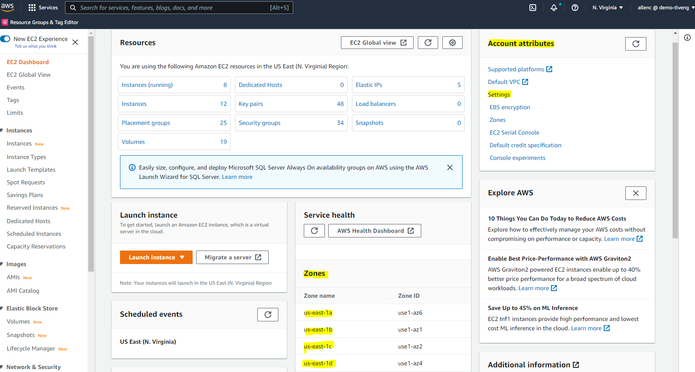
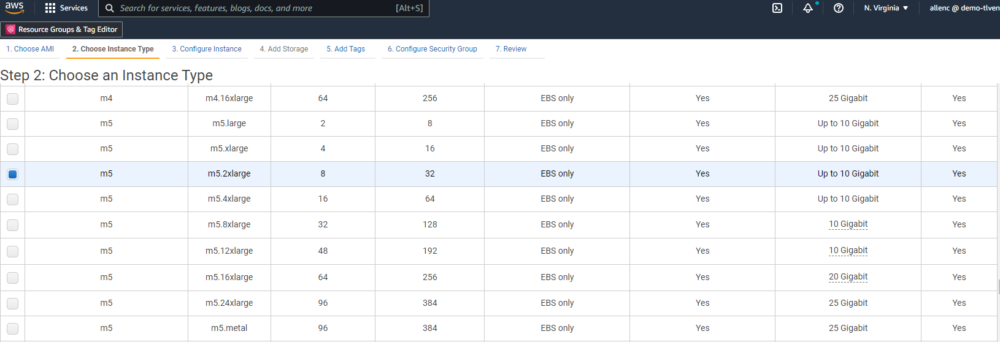
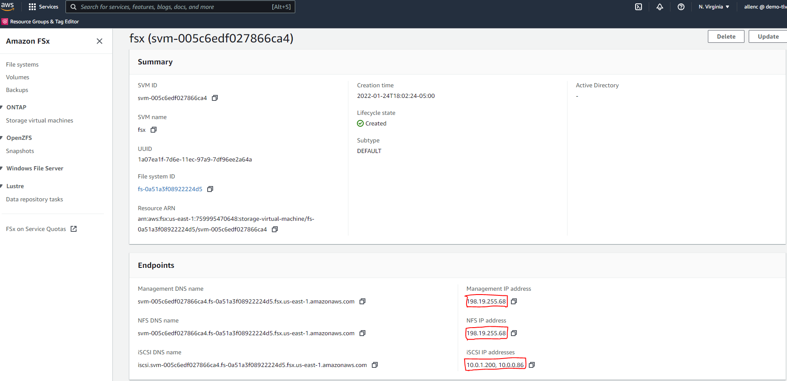
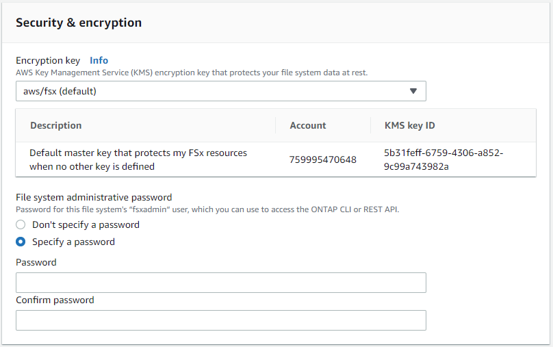
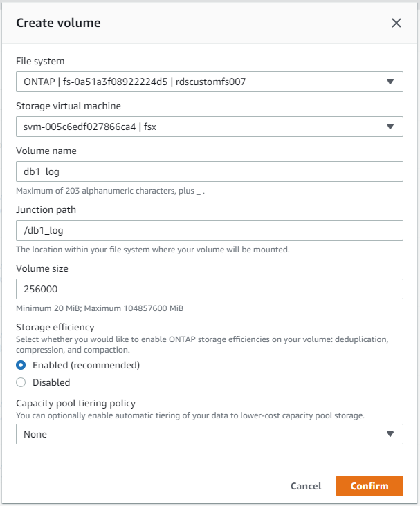
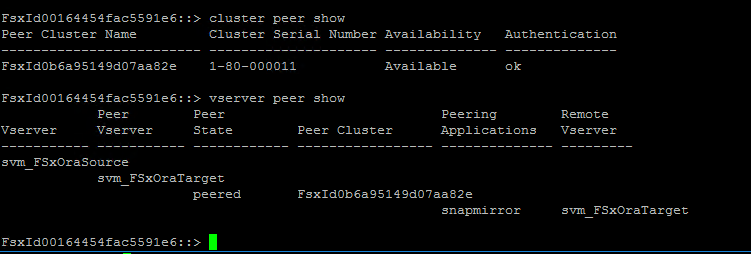
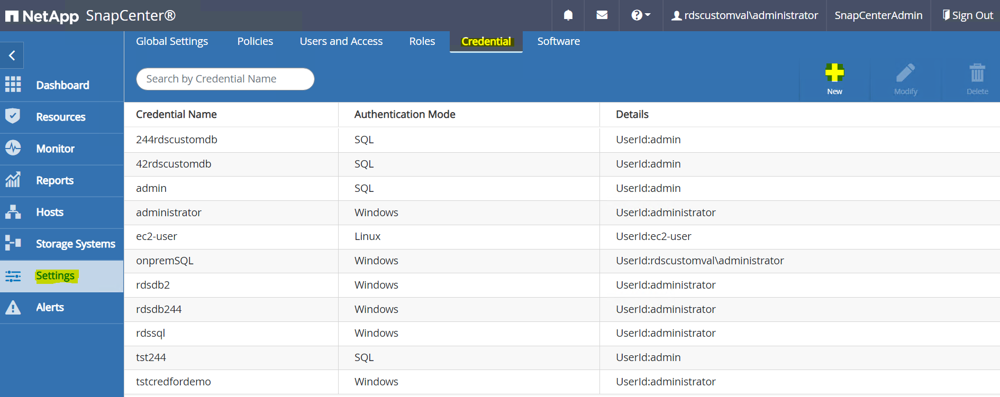
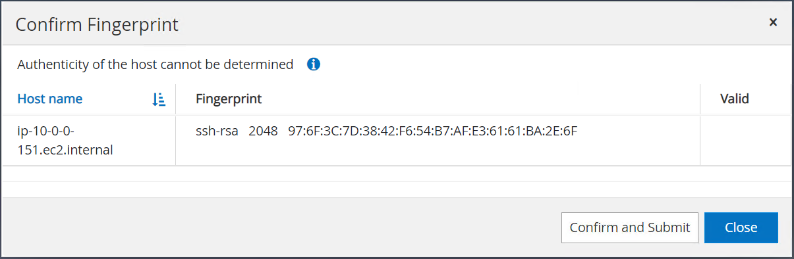
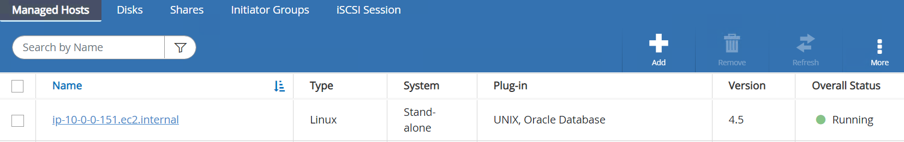

要求變更文件
要求變更文件 編輯此頁面
編輯此頁面 瞭解如何作出貢獻
瞭解如何作出貢獻AWS EC2/FSX上的逐步Oracle部署程序
透過EC2主控台部署Oracle的EC2 Linux執行個體
如果您是AWS新手、首先需要設定AWS環境。AWS網站登陸頁面上的文件索引標籤提供EC2指示連結、說明如何部署Linux EC2執行個體、以便透過AWS EC2主控台來裝載Oracle資料庫。下一節是這些步驟的摘要。如需詳細資料、請參閱連結的AWS EC2特定文件。
設定AWS EC2環境
您必須建立AWS帳戶、以配置必要的資源、以便在EC2和FSX服務上執行Oracle環境。下列AWS文件提供必要的詳細資料：
主要主題：
-
註冊AWS。
-
建立金鑰配對。
-
建立安全性群組。
在AWS帳戶屬性中啟用多個可用度區域
如架構圖所示、對於Oracle高可用度組態、您必須在一個區域中啟用至少四個可用度區域。多個可用度區域也可位於不同區域、以符合災難恢復所需的距離。

建立及連線至EC2執行個體、以裝載Oracle資料庫
請參閱教學課程 "Amazon EC2 Linux執行個體入門" 以取得逐步部署程序和最佳實務做法。
主要主題：
-
總覽：
-
先決條件：
-
步驟1：啟動執行個體。
-
步驟2：連線至執行個體。
-
步驟3：清理執行個體。
下列螢幕擷取畫面示範如何使用EC2主控台部署m5型Linux執行個體、以執行Oracle。
-
在EC2儀表板中、按一下黃色的「Launch Instance」（啟動執行個體）按鈕、即可啟動EC2執行個體部署工作流程。

-
在步驟1中、選取「Red Hat Enterprise Linux 8（HVM）、SSD Volume Type - Ami-0b0af3577fe5e3532（64位元x86）/ Ami-01fc429821bf1f4b4（64位元ARM orbit）」。

-
在步驟2中、根據Oracle資料庫工作負載、選取具有適當CPU和記憶體配置的m5執行個體類型。按一下「Next：Configure Instance Details（下一步：設定執行個體詳細資料）

-
在步驟3中、選擇應放置執行個體的VPC和子網路、並啟用公有IP指派。按一下「下一步：新增儲存設備」。

-
在步驟4中、為根磁碟分配足夠的空間。您可能需要新增交換空間。根據預設、EC2執行個體指派零交換空間、這不是執行Oracle的最佳選擇。

-
在步驟5中、視需要新增執行個體識別標記。

-
在步驟6中、選取現有的安全性群組、或為執行個體建立具有所需傳入和傳出原則的新安全性群組。

-
在步驟7中、檢閱執行個體組態摘要、然後按一下「啟動」以開始執行個體部署。系統會提示您建立金鑰配對、或選取金鑰配對以存取執行個體。


-
使用SSH金鑰配對登入EC2執行個體。視需要變更金鑰名稱和執行個體IP位址。
ssh -i ora-db1v2.pem ec2-user@54.80.114.77
如架構圖所示、您需要在指定的可用度區域中建立兩個EC2執行個體做為主要和備用Oracle伺服器。
為ONTAP Oracle資料庫儲存設備配置FSXfor Sf還原 檔案系統
EC2執行個體部署會為作業系統配置EBS根Volume。FSX for ONTAP the FSfor the FSfor the FSfor the f2檔案系統提供Oracle資料庫儲存磁碟區、包括Oracle二進位、資料和記錄磁碟區。FSX儲存NFS磁碟區可從AWS FSX主控台或Oracle安裝進行資源配置、並可根據使用者在自動化參數檔中設定的方式、配置自動化功能來配置磁碟區。
為SfSX. ONTAP 檔案系統建立FSX
請參閱本文件 "管理FSXfor ONTAP Sf1檔案系統" 用於建立FSXfor ONTAP Sf供 檔案系統使用。
主要考量：
-
SSD儲存容量：最小1024 GiB、最大192 TiB。
-
已配置的SSD IOPS。根據工作負載需求、每個檔案系統最多可有80、000個SSD IOPS。
-
處理量容量：
-
設定系統管理員fsxadmin/vsadmin密碼。FSX組態自動化所需。
-
備份與維護：停用自動每日備份；資料庫儲存備份是透過SnapCenter 循環排程來執行。
-
從SVM詳細資料頁面擷取SVM管理IP位址以及特定於傳輸協定的存取位址。FSX組態自動化所需。

請參閱下列逐步程序、以設定主要或待命的HA FSX叢集。
-
從FSX主 控台、按一下Create File System（建立檔案系統）以啟動FSXProvision工作流程。

-
選擇Amazon FSX for NetApp ONTAP 。然後按「Next（下一步）」

-
選取「Standard Create（標準建立）」、然後在「File System Details（檔案系統詳細資料）」中命名您的檔案系統、「Multi-AZ HA（多AZ HA）」根據您的資料庫工作負載、選擇自動或使用者自行配置的IOPS、最高可達80、000個SSD IOPS。FSX儲存設備在後端提供高達2TiB NVMe快取、可提供更高的測量IOPS。

-
在「網路與安全性」區段中、選取VPC、安全性群組和子網路。應在部署FSX之前建立這些項目。根據FSX叢集（主要或待命）的角色、將FSX儲存節點置於適當的區域中。

-
在「Security & Encryption（安全與加密）」區段中、接受預設值、然後輸入fsxadmin密碼。

-
輸入SVM名稱和vsadmin密碼。

-
將Volume組態保留空白、此時您不需要建立Volume。

-
檢閱「Summary（摘要）」頁面、然後按一下「Create File System（建立檔案系統）」以完成FSX檔案系統配置。

為Oracle資料庫配置資料庫Volume
請參閱 "管理FSXfor ONTAP Sfor SfVolumes -建立Volume" 以取得詳細資料。
主要考量：
-
適當調整資料庫磁碟區大小。
-
停用效能組態的容量集區分層原則。
-
為NFS儲存磁碟區啟用Oracle DNFS。
-
設定iSCSI儲存磁碟區的多重路徑。
從FSX主控台建立資料庫Volume
從AWS FSX主控台、您可以建立三個用於Oracle資料庫檔案儲存的磁碟區：一個用於Oracle二進位、一個用於Oracle資料、一個用於Oracle記錄。請確定Volume命名符合Oracle主機名稱（定義於自動化工具套件的hosts檔案）、以便正確識別。在此範例中、我們使用db1做為EC2 Oracle主機名稱、而非EC2執行個體的一般IP位址型主機名稱。



|
FSX主控台目前不支援建立iSCSI LUN。對於Oracle的iSCSI LUN部署、磁碟區和LUN可以使用ONTAP NetApp Automation Toolkit for Oracle來建立。 |
在EC2執行個體上使用FSX資料庫Volume安裝及設定Oracle
NetApp自動化團隊提供自動化套件、可根據最佳實務做法、在EC2執行個體上執行Oracle安裝與組態。目前版本的自動化套件支援使用預設RU修補程式19.8的NFS上的Oracle 19c。如有需要、自動化套件可輕鬆調整以供其他RU修補程式使用。
準備Ansible控制器以執行自動化
請依照「[Creating and connecting to an EC2 instance for hosting Oracle database]」以配置小型EC2 Linux執行個體來執行Ansible控制器。不必使用RedHat、Amazon Linux T2.Large搭配2vCPU和8G RAM就足夠了。
擷取NetApp Oracle部署自動化工具套件
以EC2-user身分登入步驟1配置的EC2 Ansible控制器執行個體、並從EC2-user主目錄執行「git clone」命令、以複製自動化程式碼的複本。
git clone https://github.com/NetApp-Automation/na_oracle19c_deploy.gitgit clone https://github.com/NetApp-Automation/na_rds_fsx_oranfs_config.git使用自動化工具套件執行自動化Oracle 19c部署
請參閱這些詳細指示 "CLI部署Oracle 19c資料庫" 以CLI自動化部署Oracle 19c。由於您使用SSH金鑰配對、而非主機存取驗證的密碼、因此執行方針的命令語法有小幅變更。下列清單為高階摘要：
-
依預設、EC2執行個體會使用SSH金鑰配對來進行存取驗證。從Ansible控制器自動化根目錄「/home/EC2-user/na_oracle19c_deploy」和「/home/EC2-user/na_RDS_FSx_oranfs_config」、複製在步驟中部署之Oracle主機的SSH金鑰「存取stkey.pem」。[Creating and connecting to an EC2 instance for hosting Oracle database]。」
-
以EC2-user身分登入EC2執行個體DB主機、然後安裝python3程式庫。
sudo yum install python3 -
從根磁碟機建立16G交換空間。依預設、EC2執行個體會建立零交換空間。請遵循以下AWS文件： "如何使用交換檔、在Amazon EC2執行個體中將記憶體配置為交換空間？"。
-
返回Ansible控制器（「CD /home/EC2-user/na_RDS_FSx_oranfs_config」）、然後執行具有適當要求和「Linux組態」標記的預複製播放手冊。
ansible-playbook -i hosts rds_preclone_config.yml -u ec2-user --private-key accesststkey.pem -e @vars/fsx_vars.yml -t requirements_configansible-playbook -i hosts rds_preclone_config.yml -u ec2-user --private-key accesststkey.pem -e @vars/fsx_vars.yml -t linux_config -
切換至「home/EC2-user/na_oracle19c_deploy主機」目錄、閱讀README檔案、然後使用相關的全域參數填入全域「vars.yml」檔案。
-
在「host_name.yml」檔案中填入「host_vars」目錄中的相關參數。
-
執行Linux的方針、並在提示輸入vsadmin密碼時按Enter。
ansible-playbook -i hosts all_playbook.yml -u ec2-user --private-key accesststkey.pem -t linux_config -e @vars/vars.yml -
執行Oracle的方針、並在提示輸入vsadmin密碼時按Enter。
ansible-playbook -i hosts all_playbook.yml -u ec2-user --private-key accesststkey.pem -t oracle_config -e @vars/vars.yml
如有需要、請將SSH金鑰檔的權限位元變更為400。將Oracle主機（「host_vars」檔案中的「Ansiv_host」）IP位址變更為EC2執行個體公有位址。
在主FSX HA叢集和備用FSX HA叢集之間設定SnapMirror
若要獲得高可用度和災難恢復、您可以在主要和待命的FSX儲存叢集之間設定SnapMirror複寫。與其他雲端儲存服務不同的是、FSX可讓使用者以所需的頻率和複寫處理量來控制和管理儲存複寫。它也能讓使用者在不影響可用度的情況下測試HA/DR。
下列步驟說明如何在主要與待命的FSX儲存叢集之間設定複寫。
-
設定主叢集和待命叢集對等。以fsxadmin使用者身分登入主要叢集、然後執行下列命令。此對等建立程序會在主要叢集和待命叢集上執行create命令。將「tandby_cluster名稱」取代為您環境的適當名稱。
cluster peer create -peer-addrs standby_cluster_name,inter_cluster_ip_address -username fsxadmin -initial-allowed-vserver-peers * -
在主叢集與待命叢集之間設定Vserver對等。以vsadmin使用者身分登入主要叢集、然後執行下列命令。將「primary _vserver_name」、「tandby_vserver_name」、「tandby_cluster名稱」取代為適合您環境的名稱。
vserver peer create -vserver primary_vserver_name -peer-vserver standby_vserver_name -peer-cluster standby_cluster_name -applications snapmirror -
確認叢集和Vserver服務已正確設定。

-
在備用FSX叢集為主要FSX叢集的每個來源Volume建立目標NFS Volume。請視您的環境而適當地取代磁碟區名稱。
vol create -volume dr_db1_bin -aggregate aggr1 -size 50G -state online -policy default -type DPvol create -volume dr_db1_data -aggregate aggr1 -size 500G -state online -policy default -type DPvol create -volume dr_db1_log -aggregate aggr1 -size 250G -state online -policy default -type DP -
如果使用iSCSI傳輸協定進行資料存取、您也可以為Oracle二進位檔、Oracle資料和Oracle記錄建立iSCSI磁碟區和LUN。在磁碟區中保留約10%的可用空間以供快照使用。
vol create -volume dr_db1_bin -aggregate aggr1 -size 50G -state online -policy default -unix-permissions ---rwxr-xr-x -type RWlun create -path /vol/dr_db1_bin/dr_db1_bin_01 -size 45G -ostype linuxvol create -volume dr_db1_data -aggregate aggr1 -size 500G -state online -policy default -unix-permissions ---rwxr-xr-x -type RWlun create -path /vol/dr_db1_data/dr_db1_data_01 -size 100G -ostype linuxlun create -path /vol/dr_db1_data/dr_db1_data_02 -size 100G -ostype linuxlun create -path /vol/dr_db1_data/dr_db1_data_03 -size 100G -ostype linuxlun create -path /vol/dr_db1_data/dr_db1_data_04 -size 100G -ostype linuxVol create -volume dr_db1_log -Agggr1 -size 250g -state online -policy預設-unix-lession---rwxr-x-x -type rw
lun create -path /vol/dr_db1_log/dr_db1_log_01 -size 45G -ostype linuxlun create -path /vol/dr_db1_log/dr_db1_log_02 -size 45G -ostype linuxlun create -path /vol/dr_db1_log/dr_db1_log_03 -size 45G -ostype linuxlun create -path /vol/dr_db1_log/dr_db1_log_04 -size 45G -ostype linux -
對於iSCSI LUN、請使用二進位LUN做為範例、為每個LUN的Oracle主機啟動器建立對應。將igroup替換為適合您環境的適當名稱、並針對每個額外的LUN遞增LULUN ID。
lun mapping create -path /vol/dr_db1_bin/dr_db1_bin_01 -igroup ip-10-0-1-136 -lun-id 0lun mapping create -path /vol/dr_db1_data/dr_db1_data_01 -igroup ip-10-0-1-136 -lun-id 1 -
在主資料庫磁碟區和備用資料庫磁碟區之間建立SnapMirror關係。請針對您的環境取代適當的SVM名稱
snapmirror create -source-path svm_FSxOraSource:db1_bin -destination-path svm_FSxOraTarget:dr_db1_bin -vserver svm_FSxOraTarget -throttle unlimited -identity-preserve false -policy MirrorAllSnapshots -type DPsnapmirror create -source-path svm_FSxOraSource:db1_data -destination-path svm_FSxOraTarget:dr_db1_data -vserver svm_FSxOraTarget -throttle unlimited -identity-preserve false -policy MirrorAllSnapshots -type DPsnapmirror create -source-path svm_FSxOraSource:db1_log -destination-path svm_FSxOraTarget:dr_db1_log -vserver svm_FSxOraTarget -throttle unlimited -identity-preserve false -policy MirrorAllSnapshots -type DP
此SnapMirror設定可透過NetApp Automation Toolkit for NFS資料庫Volume自動完成。此工具組可從NetApp Public GitHub網站下載。
git clone https://github.com/NetApp-Automation/na_ora_hadr_failover_resync.git在嘗試設定和容錯移轉測試之前、請先仔細閱讀README說明。
|
|
將Oracle二進位檔從主叢集複寫到備用叢集、可能會影響Oracle授權。請聯絡您的Oracle授權代表以取得詳細說明。另一種方法是在恢復和容錯移轉時安裝並設定Oracle。 |
部署SnapCenter
安裝SnapCenter
追蹤 "安裝SnapCenter 此伺服器" 安裝SnapCenter 伺服器。本文件說明如何安裝獨立SnapCenter 式的伺服器。SaaS版本SnapCenter 的功能正在測試版中、很快就可以取得。如有需要、請洽詢您的NetApp代表以瞭解可用度。
設定SnapCenter EC2 Oracle主機的支援外掛程式
-
自動SnapCenter 安裝完成後、SnapCenter 以管理使用者身分登入安裝SnapCenter 了該伺服器的Windows主機。

-
在左側功能表中、按一下「設定」、然後按一下「認證」和「新增」、以新增EC2使用者認證、以利SnapCenter 安裝程式。

-
在EC2執行個體主機上編輯「/etc/ssh / ssshd_config」檔案、以重設EC2使用者密碼並啟用密碼SSH驗證。
-
確認已選取「使用Sudo權限」核取方塊。您只要在上一步中重設EC2使用者密碼即可。

-
將SnapCenter 支援服務器名稱和IP位址新增至EC2執行個體主機檔案、以進行名稱解析。
[ec2-user@ip-10-0-0-151 ~]$ sudo vi /etc/hosts [ec2-user@ip-10-0-0-151 ~]$ cat /etc/hosts 127.0.0.1 localhost localhost.localdomain localhost4 localhost4.localdomain4 ::1 localhost localhost.localdomain localhost6 localhost6.localdomain6 10.0.1.233 rdscustomvalsc.rdscustomval.com rdscustomvalsc
-
在Windows主機上、將EC2執行個體主機IP位址新增至Windows主機檔案「C：\Windows \System32\drivers\etc\hosts」SnapCenter 。
10.0.0.151 ip-10-0-0-151.ec2.internal
-
在左側功能表中、選取主機>託管主機、然後按一下新增、將EC2執行個體主機新增SnapCenter 至支援中心。

檢查Oracle資料庫、然後在提交之前、按一下「More Options（更多選項）」。

核取「跳過預先安裝檢查」。確認略過預先安裝檢查、然後按一下「儲存後提交」。

系統會提示您確認指紋、然後按一下「確認並提交」。

成功完成外掛程式組態之後、託管主機的整體狀態會顯示為執行中。

設定Oracle資料庫的備份原則
請參閱本節 "設定資料庫備份原則SnapCenter" 以取得有關設定Oracle資料庫備份原則的詳細資訊。
一般而言、您需要建立完整快照Oracle資料庫備份的原則、以及Oracle僅歸檔記錄快照備份的原則。
|
|
您可以在備份原則中啟用Oracle歸檔記錄剪除、以控制記錄歸檔空間。請在「Select二線複寫選項」中勾選「建立本機Snapshot複本之後更新SnapMirror」、因為您需要複寫到HA或DR的待命位置。 |
設定Oracle資料庫備份與排程
使用者可自行設定使用者在中的資料庫備份SnapCenter 、並可個別設定或在資源群組中設定群組。備份時間間隔取決於RTO和RPO目標。NetApp建議您每隔幾小時執行一次完整資料庫備份、並以較高的頻率（例如10-15分鐘）歸檔記錄備份、以便快速恢復。
請參閱的Oracle一節 "實作備份原則以保護資料庫" 以取得實作一節所建立備份原則的詳細逐步程序 [Configure backup policy for Oracle database] 以及備份工作排程。
下列映像提供設定為備份Oracle資料庫的資源群組範例。